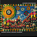
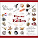
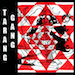
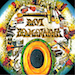
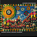
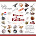
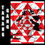
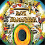

resAUnance:
Migration (FMR Records)
John Bacon, vibraphone & percussion
Jonathan Golove, electric cello
Esin Gunduz, voice
Michael McNeill, piano
Recorded by Chris Jacobs
November 2014
University at Buffalo
Amherst, NY
FMR Records (England).
Available from FMR Records, on Bandcamp, on iTunes, at the Bop Shop (Rochester, NY), and at Record Theatre (Rochester, NY).
Michael McNeill Trio:
Flight
Michael McNeill Trio
Michael McNeill, piano
Ken Filiano, bass
Phil Haynes, drums
Recorded January 18, 2014 by Jon Rosenberg
at Bucknell University, Lewisburg, PA
Mixed and mastered by Jon Rosenberg
Produced by Phil Haynes
Executive producer: Michael McNeill
Cover art: "Beloved Wilderness" © 2010,
Emily Otto
Layout/design: Julie Zack
Available on Bandcamp, on iTunes, on Amazon, on CDBaby, at the Bop Shop (Rochester, NY), and at Record Theatre (Rochester, NY).
Michael McNeill Trio:
Passageways
Michael McNeill Trio
Michael McNeill, piano
Ken Filiano, bass
Phil Haynes, drums
Recorded December 11, 2010 by Bill Sack
at Hallwalls Contemporary Arts Center, Buffalo, NY
Mixed and mastered by Jon Rosenberg
Produced by Phil Haynes
Executive producer: Michael McNeill
Cover photograph by Keating Godfrey
Layout/design: Mari McNeil
Available on Bandcamp, on iTunes, on Amazon, on CDBaby, at the Bop Shop (Rochester, NY), and at Record Theatre (Rochester, NY).
Ravi Padmanabha's Bul-bul Tarang Gang:
Purandara Dasa Day
Ravi Padmanabha: bul-bul tarang, voice, string drum, tabla
Naryan Padmanabha: percussion
Cory Kertzie: percussion
Ed Klavoon: bass
Alex Glenfield: trumpet, voice
Michael McNeill: harmonium
Recorded by Ravi Padmanabha
January 2015
Clarence Center, NY
Limited edition of 100 (?) cassettes on Sloowtapes (Belgium). Available as a digital download via BandCamp
Mari McNeil:
Here Beneath The Blue (2014) (iTunes)
Mari McNeil: voice
John Bacon: drums, vibraphone
Michael McNeill: piano
Wayne Moose: bass
Bobby Militello: alto saxophone and flute
Tim Clarke: trumpet
Matt Michaud: guitar
Bob Sneider: additional guitar
Recorded, mixed, and mastered by Fred Betschen
Marc Custom Recordings, Clarence Center, NY
October, 2013
Produced by John Bacon
Arrangements: John Bacon & Michael McNeill
Executive producer: Mari McNeil
Ravi Padmanabha's My Nada Brahma:
Mission To Mount Everest
Ravi Padmanabha: tabla and percussion
David Adamzcyk: violin
Ron LoCurto: guitar
Michael McNeill: harmonium
Recorded by Justin Rose
GRC Studios, Buffalo, NY
Summer, 2013
Cover art by Ravi Padmanabha
Available as a CD, LP, or digital download.
Kelly Bucheger:
House of Relics
Kelly Bucheger: alto & tenor saxophones
Tim Clarke: trumpet
Michael McNeill: piano
Danny Ziemann: bass
Russ Algera: drums
Special guest: Bruce Johnstone, baritone saxophone
Recorded by Rich Wattie
Eastman School of Music
Rochester, NY
Fall, 2011
Compositions by Kelly Bucheger
Executive producer: Kelly Bucheger
Ravi Padmanabha's Bul-bul Tarang Gang:
Kali
Ravi Padmanabha: bul-bul tarang and percussion
Aneal Padmanabha: percussion
Naryan Padmanabha: percussion
Bill Conroy: percussion
Ed Klavoon: bass
Michael McNeill: harmonium
Recorded by Ravi Padmanabha
Spring, 2012
East Amherst, NY
Limited edition of 100 cassettes on Sloowtapes (Belgium). Available as a digital download or CD via BandCamp
Ravi Padmanabha's My Nada Brahma
Ravi Padmanabha: tabla and percussion
Ron LoCurto: guitar
Michael McNeill: harmonium
Recorded by Ravi Padmanabha
November/December 2010
East Amherst, NY
Tim Clarke (trumpet), Phil Sims (trombone)
Kelly Bucheger (alto & tenor saxes), Nelson Rivera (tenor & soprano saxes)
Steve Baczkowski (baritone sax)
Michael McNeill (piano), Dave Arenius (bass), John Bacon (drums)
Conducted by Brendan Fitzgerald
various combinations of Megan Kyle (oboe), Nathan Heidelberger (horn), Zane Merritt (guitar), Esin Gündüz (voice), Ethan Hayden (voice), Michael McNeill (piano), Evan Courtin (violin), T.J. Borden ('cello), and Brendan Fitzgerald (conductor & percussion). On Halve Time: Christopher Culp (clarinet), Evan Courtin (violin), T. J. Borden (cello), Michael McNeill (piano); composed by Nathan Heidelberger.
Michael McNeill
phone/text: 1.585.269.9251
Saluda, VA • Buffalo, NY


 
